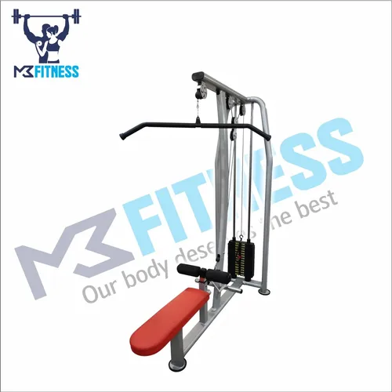

SEATED ROW

Seated row merupakan alat gym berbentuk bangku dan pegas yang bisa ditarik untuk melatih otot punggung dan bahu. Cara menggunakan seated row adalah duduk di bangku dengan kaki tegak dan menarik pegangan ke arah tubuh.
Alat ini juga berfungsi untuk melatih otot tangan, terutama bagian bicep dan tricep. Butuh kekuatan tertentu untuk menarik pegangan agar tetap stabil. Lakukan secara perlahan dan bertahap agar hasilnya maksimal.
Sumber: IDN Times